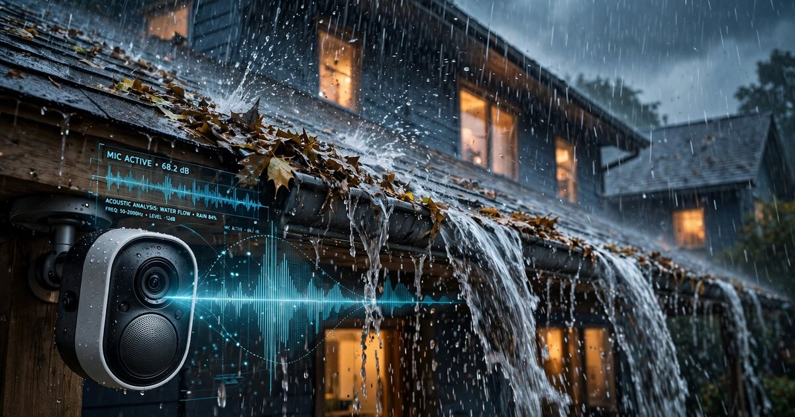

System and Method for Autonomous Detection of Roof Drainage System Failures Using Ambient Audio Analysis from Consumer Smart Home Devices and Precipitation-Correlated Acoustic Pattern Recognition

Abstract
Disclosed is a system and method for autonomous detection and classification of roof drainage system failures using microphones already present in consumer smart home devices, including outdoor security cameras, video doorbells, smart speakers positioned near windows, and eave-mounted floodlight cameras. The system continuously captures ambient audio during precipitation events, extracts mel-frequency cepstral coefficient (MFCC) features and spectral flux characteristics from the captured signal, and feeds them into a lightweight convolutional neural network (CNN) classifier trained to distinguish between normal gutter-downspout flow signatures and failure-mode signatures including overflow splashing, partial blockage gurgling, disconnected downspout free-fall impact, ice dam backup resonance, and sagging gutter pooling turbulence. The system correlates detected acoustic anomalies with real-time precipitation intensity data obtained from weather APIs or from the rainfall intensity itself as estimated by the ambient microphone, producing confidence-weighted drainage health assessments that account for rain rate, wind speed, and ambient noise conditions. Multi-device triangulation across two or more microphone-equipped devices localizes the failure to specific sections of the roof drainage system. A per-building acoustic baseline model, trained over initial rain events, enables drift detection as gutter condition degrades between cleanings, generating alerts before water intrusion damage occurs.
Field of the Invention
This invention relates to predictive building maintenance, specifically to the use of ambient audio analysis from existing consumer smart home devices for non-invasive, continuous monitoring of residential and commercial roof drainage systems during precipitation events.
Background
Water damage and freezing accounted for approximately 22.6% of all homeowners insurance claims between 2019 and 2023, with an average claim cost exceeding $15,000 (Insurance Information Institute). Clogged gutters and failed downspouts rank among the most common causes of non-catastrophic residential water damage (This Old House, 2026). The Insurance Institute for Business & Home Safety (IBHS) estimates that water damage from roof drainage failures costs U.S. insurers approximately $13 billion per year (ConsumerAffairs analysis of Triple-I data). A single inch of standing water in a typical home can cause up to $25,000 in damage (FEMA).
Current gutter inspection methods are periodic and manual:
- Visual inspection from ground level: Homeowner or contractor visually checks for overflow evidence, sagging, or visible debris. Accuracy depends on vantage point and lighting. Typical frequency: once or twice annually, if performed at all. Less than 20% of homeowners take precautionary steps against water damage (Insurify, 2024).
- Ladder-based inspection: Physical access to gutter trough for debris removal and flow testing. Carries fall risk (over 500,000 ladder-related injuries annually in the U.S. per the CPSC). Requires scheduling around weather and season.
- Drone-based visual inspection: Consumer drones can photograph gutter condition from above, but require operator skill, FAA Part 107 compliance for commercial use, cannot assess flow characteristics, and cannot operate during the rain events when failures actually manifest.
- Dedicated gutter sensors: Products like GutterSense and ultrasonic level sensors (e.g., WILSEN.sonic from Pepperl+Fuchs with LoRaWAN) detect water levels in drainage systems but require purpose-built hardware installation, wiring or battery maintenance, and per-unit costs of $50-200.
Acoustic sensing for rainfall measurement has been validated across multiple modalities. Paškauskas (PLoS ONE, 2024) demonstrated that microphone-based raindrop counting using compact machine learning models can achieve 10-millisecond temporal resolution with 80% accuracy. Avanzato and Vitabile (Sensors, 2019) used MFCC features of raindrop impacts fed into a CNN for rainfall intensity classification. NASA/UW Applied Physics Laboratory research has characterized the distinct acoustic signatures of different raindrop sizes based on bubble entrainment and impact mechanics, with frequency ranges spanning 1-50 kHz depending on drop diameter. Ma et al. (Journal of Hydrology, 2021) demonstrated rainfall observation using existing surveillance camera audio feeds, proving that ambient urban microphones not designed for meteorological measurement can be repurposed for rainfall detection.
Critically, no prior art combines: (a) the use of consumer smart home device microphones already installed on building exteriors for drainage-specific acoustic analysis, (b) precipitation-correlated anomaly detection that uses the rain event itself as both the diagnostic trigger and the reference signal, (c) per-building baseline models that track acoustic drift as gutter condition degrades, and (d) multi-device spatial localization of drainage failures without purpose-built sensor installation.
Detailed Description
1. Audio Source Devices and Positioning
The system exploits microphones in devices already mounted on or near building exteriors as a standard part of home security and smart home ecosystems. Target device categories include:
- Video doorbells (Ring, Nest, Arlo, Eufy): Typically mounted at 4-5 ft height on the front facade, within 2-8 ft horizontal distance of a gutter downspout termination or front-facing gutter run. Microphones are omnidirectional electret or MEMS with 100 Hz - 16 kHz capture range and 16-bit, 16 kHz or 44.1 kHz sampling.
- Outdoor security cameras (Ring Floodlight Cam, Nest Cam Outdoor, Arlo Pro): Often mounted at soffit or eave height (8-12 ft), directly adjacent to gutter trough and within 1-3 ft of the gutter-to-downspout junction. These devices have the highest signal-to-noise ratio for gutter flow acoustics due to proximity.
- Smart speakers near windows (Echo, Nest Hub, HomePod): Indoor devices within 1-5 ft of exterior walls pick up roof drainage sounds transmitted through windows, walls, and eave vents. Useful as secondary confirmation signals when outdoor microphone sources are ambiguous.
- Eave-mounted floodlight cameras: Positioned directly at roof edge, providing the closest microphone position to gutter flow of any standard consumer device category.
No new hardware is required. The system operates as a software layer consuming audio streams or audio event data from existing device APIs or on-device processing SDKs.
2. Acoustic Signature Taxonomy of Drainage States
Roof drainage systems produce acoustically distinct signatures across operating states. The classifier targets the following taxonomy, with characteristic frequency and temporal features:
- Normal laminar downspout flow (Class 0): Continuous broadband noise in the 200 Hz - 4 kHz range with stable spectral centroid. Amplitude scales monotonically with precipitation rate. Low spectral flux (< 0.15 normalized units per 100 ms frame). This is the baseline healthy state.
- Overflow splash (Class 1 — gutter clog): When a gutter section fills and water cascades over the front lip, the resulting splash produces high-amplitude impulsive components in the 1-8 kHz range with characteristic periodicity corresponding to the drip-sheet-drip cycle at 2-6 Hz. Spectral flux increases 3-5x above Class 0 baseline. The spatial signature is distributed along the gutter run rather than concentrated at the downspout.
- Partial blockage gurgle (Class 2 — developing clog): Debris partially obstructing the gutter-to-downspout transition creates turbulent vortex flow with a distinctive low-frequency oscillation at 50-300 Hz, often with quasi-periodic amplitude modulation at 0.5-2 Hz. Spectrally similar to pipe flow with entrained air bubbles. Detectable before full overflow occurs, enabling early warning.
- Disconnected downspout free-fall (Class 3 — structural failure): When a downspout section separates from its bracket or the elbow disconnects from the gutter outlet, water exits the system at the separation point and free-falls to the ground or lower roof surface. The acoustic signature is a concentrated high-amplitude broadband impact (500 Hz - 12 kHz) at a fixed spatial location that does not correspond to a normal downspout termination point. The fall height determines the dominant frequency of the impact splash.
- Ice dam backup (Class 4 — winter mode): In freeze-thaw conditions, ice forming at gutter edges creates a dam that forces meltwater to back up under shingles. The acoustic signature during thaw is a distinctive trickling-then-stopping cadence as meltwater periodically breaches and re-freezes at the ice dam edge. Spectral energy is concentrated in the 500 Hz - 3 kHz band with irregular on-off temporal patterns uncorrelated with precipitation rate (since the water source is snowmelt, not active rain).
- Sagging gutter pooling (Class 5 — structural degradation): A gutter section that has pulled away from its fascia mounting or whose bracket has failed creates a low point where water pools rather than flowing toward the downspout. The acoustic signature during rain is reduced or absent downspout flow noise combined with localized low-frequency water pooling resonance (80-400 Hz) that intensifies as the pooled volume grows. When the pool eventually overflows the low point, it produces Class 1 (overflow splash) signatures at an anomalous location.
3. Signal Processing Pipeline
Audio captured from each device undergoes the following processing chain:
Step 1: Rain event detection. A binary rain/no-rain classifier operates continuously on 5-second audio frames. The classifier uses spectral energy distribution in the 1-8 kHz band (where raindrop impacts on surfaces produce characteristic broadband noise) compared to the device's learned ambient noise floor. Only frames classified as "rain present" with confidence > 0.8 proceed to drainage analysis. This gate prevents false positives from sprinklers, car washes, HVAC condensate drip, or neighbor activity.
Step 2: Precipitation intensity estimation. During confirmed rain events, the system estimates rainfall rate from the ambient audio using a regression model trained on paired audio-rain gauge data (building on the methodology of Ma et al., 2021). Alternatively, the system queries a weather API (e.g., OpenWeatherMap One Call 3.0, Tomorrow.io) for the building's GPS coordinates to obtain current precipitation rate. This intensity estimate serves as the reference input for drainage anomaly detection: the system knows how much water the gutters should be handling.
Step 3: Feature extraction. From each 1-second audio frame (with 50% overlap), the system computes: 13 MFCCs and their first and second temporal derivatives (39 features); spectral centroid, spectral bandwidth, spectral rolloff (3 features); spectral flux (rate of change of spectral energy between frames, 1 feature); zero-crossing rate (1 feature); RMS energy in four sub-bands: 50-200 Hz, 200-1000 Hz, 1-4 kHz, 4-16 kHz (4 features); and temporal envelope modulation spectrum (amplitude modulation frequency content in the 0.5-10 Hz range, 8 features). Total feature vector: 56 dimensions per frame.
Step 4: Classification. A 1D temporal convolutional network (TCN) processes sequences of 30 feature frames (15 seconds of audio at 50% overlap) and outputs per-class probabilities for the six drainage states defined above. The TCN architecture uses dilated causal convolutions with dilation factors [1, 2, 4, 8, 16], enabling a receptive field of 31 frames without pooling, which preserves the temporal fine structure needed to distinguish periodic overflow dripping (Class 1) from continuous laminar flow (Class 0). Model size: approximately 120 KB quantized to INT8 for on-device deployment.
Step 5: Precipitation-correlated anomaly scoring. Raw classification outputs are adjusted by the estimated precipitation intensity. A lookup table maps rain rate (mm/hr) to expected acoustic power in each sub-band for a healthy drainage system at the specific building, learned during the baseline calibration phase (Section 4). The anomaly score is the Mahalanobis distance between the observed feature vector and the rain-rate-conditioned expected feature distribution. Scores exceeding 3.0 standard deviations for more than 60 consecutive seconds trigger a drainage alert.
4. Per-Building Acoustic Baseline Calibration
During the first 3-5 rain events after system activation, the system operates in calibration mode. It records the acoustic signatures at each microphone position across varying precipitation intensities and builds a per-building baseline model that captures:
- Normal flow transfer function: The relationship between precipitation rate and acoustic power spectral density at each device location, accounting for the building's specific gutter material (aluminum, copper, vinyl, steel), gutter profile (K-style, half-round), downspout material and diameter, roof material (asphalt shingle, tile, metal, flat membrane), and the distance and angle between each microphone and the nearest gutter/downspout element.
- Ambient noise profile: The location-specific background noise from HVAC equipment, traffic, vegetation, and neighboring structures, enabling device-specific SNR estimation during rain events.
- Device-specific frequency response correction: Different smart home devices have different microphone capsules, enclosure acoustics, and DSP preprocessing (noise cancellation, automatic gain control). The baseline phase learns each device's effective frequency response so that feature extraction operates on a normalized acoustic signal regardless of hardware.
After calibration, the system compares each subsequent rain event against this baseline. Gradual drift in the baseline (increasing overflow energy, decreasing downspout flow energy) indicates progressive debris accumulation and triggers maintenance alerts before a complete blockage occurs.
5. Multi-Device Spatial Localization
When two or more microphone-equipped devices are positioned on the same building (a common configuration — the average U.S. smart home has 3-5 outdoor connected devices), the system performs spatial localization of detected anomalies. The method exploits the inverse-square-law attenuation of acoustic energy: a drainage failure closer to Device A than Device B will produce a higher SNR at A than at B. By comparing the relative anomaly signal strength across all available devices and combining this with the known device positions (from installation GPS or user-provided floor plan), the system estimates the failure location to within ±3 meters along the building perimeter.
For devices at eave height (outdoor cameras, floodlight cams), left-right localization along the roofline is achievable via interaural time difference (ITD) analysis if the device has a stereo microphone pair, or via spectral shading effects from the device enclosure's directional response at frequencies above 2 kHz.
6. Alert Generation and Integration
The system generates tiered alerts based on anomaly severity and persistence:
- Level 1 — Watch (yellow): Acoustic baseline drift exceeding 1.5 standard deviations sustained across 3+ rain events. Suggests debris accumulation has begun. Recommended action: schedule routine gutter cleaning.
- Level 2 — Warning (orange): Active Class 1 (overflow) or Class 2 (partial blockage) detection during moderate rain (> 5 mm/hr). Drainage system is partially compromised. Recommended action: clean gutters within 7 days.
- Level 3 — Critical (red): Active Class 3 (structural failure), Class 4 (ice dam) during melt events, or Class 1 overflow during light rain (< 3 mm/hr, indicating near-complete blockage). Water intrusion risk is imminent or active. Recommended action: immediate inspection.
Alerts are delivered via the smart home device's native notification channel (Ring app, Google Home, Alexa), with optional integration to home insurance carrier apps for proactive claim prevention programs. The system provides a drainage health score (0-100) accessible via REST API for integration with property management platforms, home inspection software, and real estate transaction documentation.
7. Insurance and Property Management Applications
- Proactive claim prevention: Insurance carriers offering premium discounts for homes with active drainage monitoring (analogous to existing discounts for smart water leak detectors and monitored security systems). The drainage health score provides an auditable, timestamped maintenance record.
- Property condition documentation: Automated drainage condition reports for real estate transactions, providing buyers and sellers with objective, data-backed evidence of roof drainage system maintenance history.
- Multi-unit property management: Scalable monitoring across apartment complexes, HOA communities, and commercial roofs where manual inspection of every building's gutters is cost-prohibitive. A single dashboard aggregates drainage health scores across all monitored structures.
- Seasonal maintenance scheduling: The system's drift detection enables condition-based gutter cleaning scheduling rather than calendar-based scheduling, reducing unnecessary service calls during low-debris seasons and ensuring timely cleaning during heavy leaf-fall periods.
8. Figures Description
- Figure 1: System architecture showing consumer smart home devices (video doorbell, eave-mounted camera, indoor smart speaker) capturing ambient audio during a rain event, with on-device or cloud-based processing pipeline feeding drainage state classification and alert generation.
- Figure 2: Mel-spectrogram comparison of the six drainage state classes showing distinctive frequency and temporal patterns for normal flow (Class 0), overflow splash (Class 1), partial blockage gurgle (Class 2), disconnected downspout (Class 3), ice dam (Class 4), and sagging gutter (Class 5).
- Figure 3: Per-building acoustic baseline drift over a 6-month period, showing progressive increase in overflow spectral energy as debris accumulates, with Level 1, Level 2, and Level 3 alert thresholds marked.
- Figure 4: Multi-device spatial localization geometry for a building with three microphone-equipped devices, showing inverse-square-law signal strength contours and estimated failure position at a gutter-downspout junction.
Claims
- A system for detecting roof drainage failures, comprising: one or more consumer smart home devices, each containing a microphone; a rain event detection module that identifies precipitation events from ambient audio captured by the microphone; a drainage state classifier that analyzes acoustic features of the captured audio during confirmed precipitation events and classifies the roof drainage system state into one of a plurality of states including normal flow and one or more failure modes; and an alert generator that produces notifications when the classifier detects a failure-mode state.
- The system of claim 1, wherein the consumer smart home devices are selected from the group consisting of video doorbells, outdoor security cameras, eave-mounted floodlight cameras, and smart speakers positioned near exterior walls, and wherein no purpose-built drainage sensor hardware is required.
- The system of claim 1, wherein the plurality of drainage states includes: normal laminar downspout flow, gutter overflow splash, partial blockage gurgle, disconnected downspout free-fall impact, ice dam backup, and sagging gutter pooling.
- The system of claim 1, further comprising a precipitation intensity estimation module that estimates current rainfall rate either from the ambient audio signal itself or from a weather data API, and wherein the drainage state classifier adjusts its anomaly scoring based on the estimated precipitation intensity.
- The system of claim 4, wherein the anomaly scoring comprises computing a Mahalanobis distance between observed acoustic feature vectors and rain-rate-conditioned expected feature distributions learned during a per-building baseline calibration phase.
- The system of claim 1, further comprising a per-building acoustic baseline model that learns the normal acoustic signatures of the building's specific drainage system during an initial calibration period spanning multiple rain events, and a drift detection module that tracks progressive deviation from the baseline across subsequent rain events to identify gradual debris accumulation.
- The system of claim 1, wherein two or more microphone-equipped devices are positioned on the same building, and further comprising a spatial localization module that estimates the physical location of a detected drainage failure along the building perimeter by comparing relative anomaly signal strength across the two or more devices.
- A method for monitoring roof drainage system health, comprising: continuously capturing ambient audio from one or more consumer smart home device microphones positioned on or near a building exterior; detecting the onset of a precipitation event from the captured audio; during the detected precipitation event, extracting acoustic features including mel-frequency cepstral coefficients, spectral flux, and sub-band energy from the captured audio; classifying the drainage system state by processing the extracted features through a temporal convolutional network trained to distinguish normal drainage flow from a plurality of failure-mode acoustic signatures; and generating a drainage health assessment correlated with the estimated precipitation intensity.
- The method of claim 8, further comprising establishing a per-building acoustic baseline during an initial calibration period, and detecting progressive drift from the baseline across successive rain events to identify gradual drainage system degradation before complete failure occurs.
- The method of claim 8, further comprising integrating the drainage health assessment with a property insurance system to provide premium adjustment based on monitored drainage maintenance status, and generating timestamped drainage condition reports for real estate transactions.
- The system of claim 1, wherein the drainage state classifier is a quantized temporal convolutional network with dilated causal convolutions, deployable on-device within the consumer smart home device's existing compute resources, operating without cloud connectivity during classification inference.
Prior Art References
- Insurance Information Institute (Triple-I) — Water damage accounts for 22.6% of homeowners insurance claims (2019-2023), average claim >$15,000
- ConsumerAffairs / Triple-I analysis — Water damage claims cost U.S. insurers ~$13 billion annually
- This Old House (2026) — Clogged gutters among most common causes of non-catastrophic residential water damage
- FEMA — 1 inch of standing water can cause up to $25,000 in damage
- Insurify (2024) — Less than 20% of homeowners take precautionary steps against water damage
- U.S. Consumer Product Safety Commission — Over 500,000 ladder-related injuries annually
- Paškauskas, PLoS ONE (2024) — Raindrop counting via microphone-based instantaneous frequency sensing with ML, 10 ms resolution, 80% accuracy
- Avanzato & Vitabile, Sensors (2019) — CNN rainfall classification using MFCC features from microphone recordings
- NASA/UW Applied Physics Laboratory — Acoustic signatures of raindrop sizes (1-50 kHz) via bubble entrainment and impact mechanics
- Ma et al., Journal of Hydrology (2021) — Rainfall observation using existing surveillance camera audio feeds
- Pepperl+Fuchs WILSEN.sonic / Semtech LoRaWAN — IoT ultrasonic drain grate monitoring (purpose-built hardware approach)
- US10344481B2 — Self-cleaning gutter system with rain sensor and actuated flap (mechanical, not acoustic diagnostic)
- OpenWeatherMap One Call 3.0 API — Real-time precipitation intensity data for GPS coordinates
- TensorFlow Lite for Microcontrollers — On-device ML runtime for embedded inference